Wheel Loader with Hydromechanical Power Split Transmission

(return to Wheel Loader Design with Simscape Overview)
This example models a wheel loader with a power-split hydromechanical continuously variable transmission (CVT. Other CVT technologies can be tested as well, including pure hydrostatic and electrical CVT. The engine, CVT, driveline, chassis, and linkage system are all modeled using Simscape. The control systems are modeled in Simulink. A bucket or a grapple can be attached to the linkage.
Contents
- Model
- Wheel Loader Subsystem
- Transmission Variant Subsystems
- Abstract CVT Subsystem
- Hydrostatic Transmission Subsystem
- Electrical Transmission Subsystem
- Power Split Hydromechanical CVT Subsystem
- Vehicle Subsystem
- Actuator Subsystem: Hydraulic
- Driveline 3D Subsystem
- Driveline 1D Subsystem
- Linkage Subsystem
- Simulation Results: Y Cycle, Droop Control, Power-Split CVT, 1D Driveline, Bucket, Ideal Actuation
- Simulation Results: Y Cycle, Droop Control, Abstract CVT, 1D Driveline, Bucket, Ideal Actuation
- Simulation Results: Y Cycle, Droop Control, Electrical CVT, 1D Driveline, Bucket, Ideal Actuation
- Simulation Results: Y Cycle, Droop Control, Hydrostatic CVT, 1D Driveline, Bucket, Ideal Actuation
- Comparison of CVT Models
- Simulation Results: Y Cycle, Droop Control, Power-Split CVT, 1D Driveline, Bucket, Hydraulic Actuation
Model
This example models a wheel loader with a power-split hydromechanical continuously variable transmission (CVT).

Wheel Loader Subsystem
The wheel loader is powered by an engine. The continuously variable transmission varies its ratio to drive the vehicle at the desired speed. The vehicle includes the driveline, articulated chassis, and linkage which operates the implements.
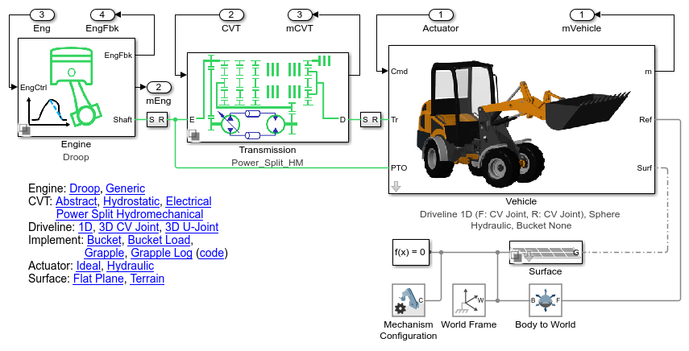Transmission Variant Subsystems
Four options for modeling the CVT are included in the model. Using variant subsystems, one of them can be activated for a test. The subsystems all have the same interface, which includes a mechanical connection to the engine and a mechanical connection to the driveline. Intefaces based on physical connections are particularly well-suited to swapping between models of different technologies or fidelity.
Abstract CVT Subsystem
Models a CVT as a variable ratio gear. This model can be used in early stages of development to refine requirements for the transmission. It can also be tuned to match a more detailed model of the CVT so as to provide accurate behavior with less computation.
Hydrostatic Transmission Subsystem
Hydrostatic transmission with variable-displacement pump and fixed-displacement motor. This system alone can also serve as a CVT, but it is not as efficient as the power-split design, as the mechanical path has a higher efficiency.
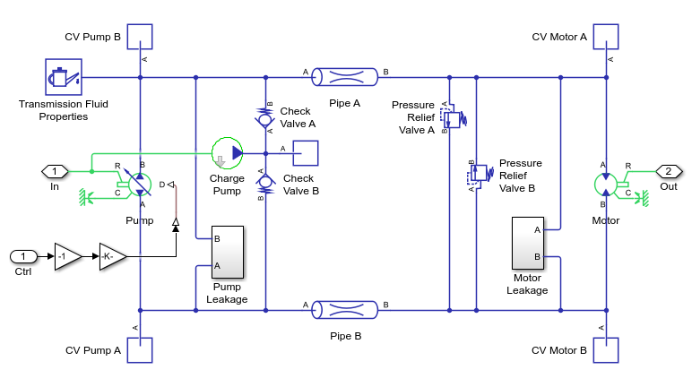Electrical Transmission Subsystem
Electrical transmission with generator, motor, and battery. A control system adjusts the power flow between the motor and the generator. The control system enables these components to act as a variable ratio transmission.
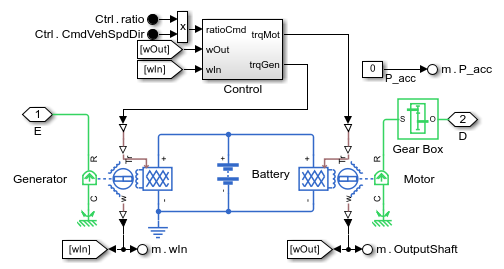Power Split Hydromechanical CVT Subsystem
Transmission with four planetary gears, clutches, and a parallel power path through a hydrostatic transmission. A hydraulic regenerative braking system is also included to improve fuel economy by storing kinetic energy as pressure in an accumulator.
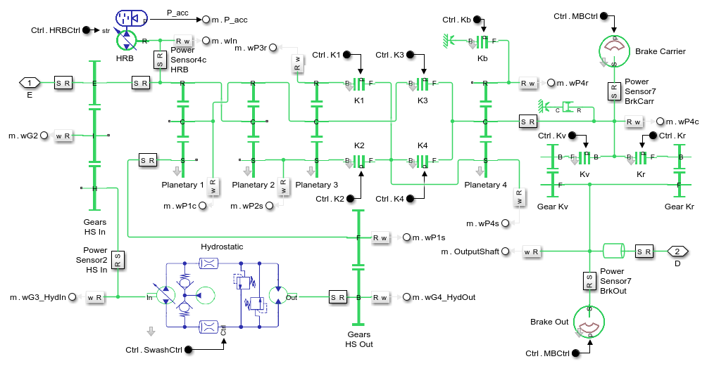Vehicle Subsystem
Model of the wheel loader vehicle, including front and rear articulated chassis, driveline, and linkage. An optional load can be added using variant subsystems.
The fidelity level of the mechanical driveline model can be set to different options:
- Driveline 1D : Shafts are modeled as rotational inertias only. Simulation runs very quickly.
- Driveline 3D : Shafts are modeled with a 3D multibody model. Captures all rigid body dynamics of the system.
The actuation model for the steering, linkage, and implements can be configured to use the following options
- Ideal: Cylinder positions are set using prescribed motion. Simulation runs very quickly. Used to determine actuator requirements.
- Hydraulic: Hydraulic pumps, valves, and cylinders are used to model the actuation system. Used to select hydraulic components and set pressure levels.

Actuator Subsystem: Hydraulic
In this configuration the cylinders are actuated by a hydraulic system. Pumps are driven by the PTO shaft, one for the linkage and implements and another for the steering system. Valves control the flow of hydraulic fluid to the actuators which extend and contract to the desired position.
The interface from this 1D model of the hydromechanical system and the 3D multibody of the linkage is a 1D mechanical connection for the rod of each cylinder.
Driveline 3D Subsystem
Models a four-wheel drive driveline using parts imported from a CAD assembly. The output of the CVT connects to the output transfer gear which is connected via differentials to all four wheels. A separate variant models the driveline as a 1D mechanical model that can be used for exploring the design space of shaft sizes and gear ratios.
Driveline 1D Subsystem
Models a four-wheel drive driveline using parts imported from a CAD assembly. The output of the CVT connects to the output transfer gear which is connected via differentials to all four wheels. A separate variant models the driveline as a 1D mechanical model that can be used for exploring the design space of shaft sizes and gear ratios.
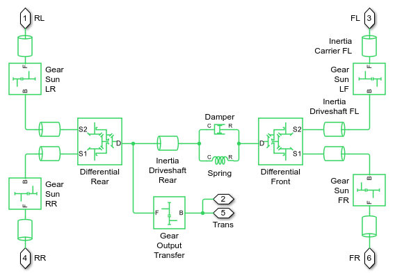Linkage Subsystem
Models the linkage subsystem for actuating the implement. Lift and tilt actuators actuate the linkage to raise and lower the implement. The implement can be configured to a bucket or a grapple using variant subsystems.
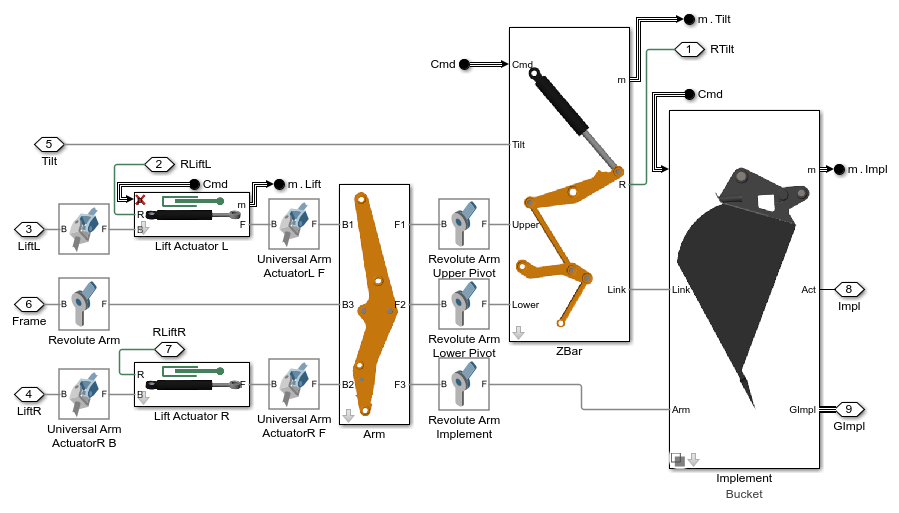Simulation Results: Y Cycle, Droop Control, Power-Split CVT, 1D Driveline, Bucket, Ideal Actuation
The results below come from a simulation test where the wheel loader completes a standard Y-cycle with a power-split CVT.
Elapsed Sim Time = 75.1056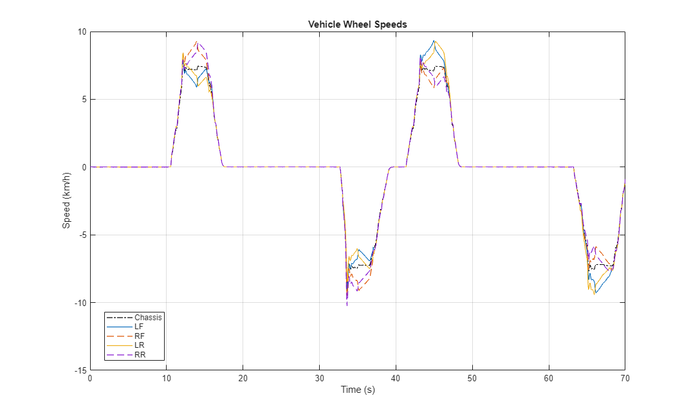 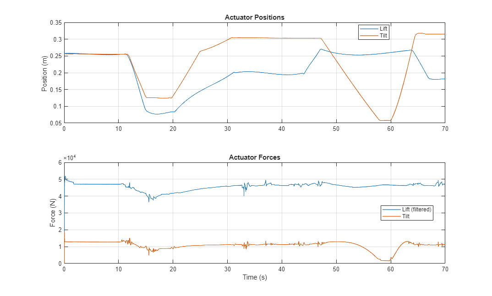
Simulation Results: Y Cycle, Droop Control, Abstract CVT, 1D Driveline, Bucket, Ideal Actuation
The results below come from a simulation test where the wheel loader completes a standard Y-cycle. The CVT is modeled abstractly as a variable ratio gear.
Elapsed Sim Time = 21.6261
Simulation Results: Y Cycle, Droop Control, Electrical CVT, 1D Driveline, Bucket, Ideal Actuation
The results below come from a simulation test where the wheel loader completes a standard Y-cycle with an electrical CVT.
Elapsed Sim Time = 20.7649
Simulation Results: Y Cycle, Droop Control, Hydrostatic CVT, 1D Driveline, Bucket, Ideal Actuation
The results below come from a simulation test where the wheel loader completes a standard Y-cycle with an electrical CVT.
Elapsed Sim Time = 44.7523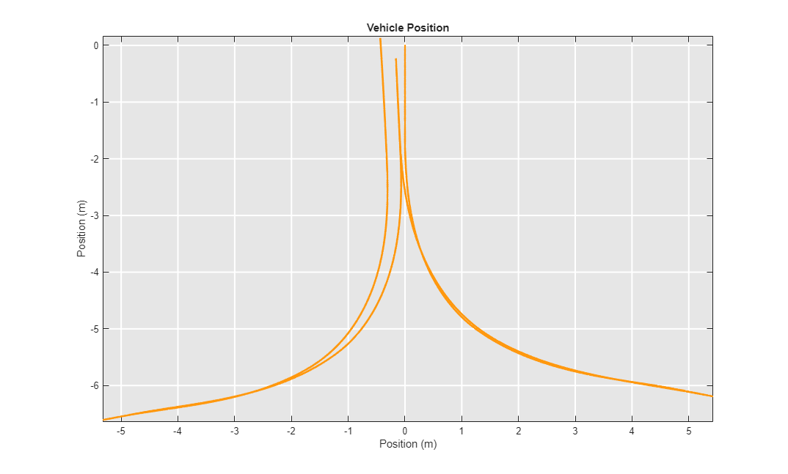 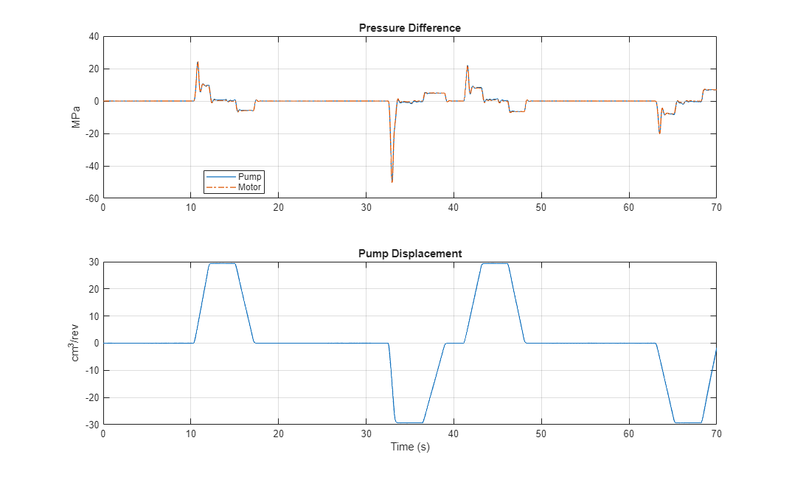
Comparison of CVT Models
The following plot compares the input torque for tests with the power split CVT, electrical, and the abstract CVT models.
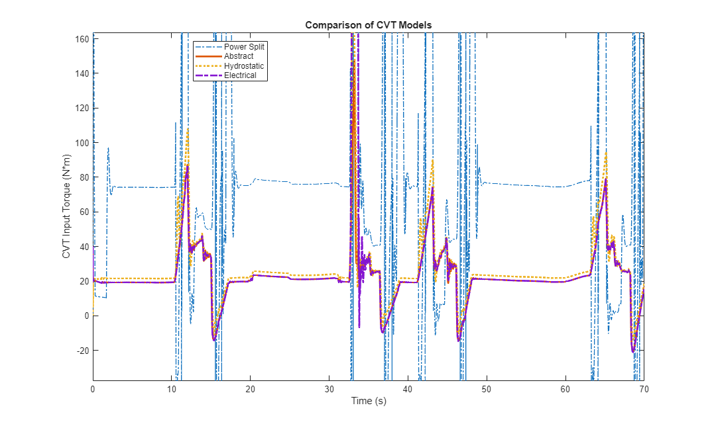Simulation Results: Y Cycle, Droop Control, Power-Split CVT, 1D Driveline, Bucket, Hydraulic Actuation
The results below come from a simulation test where the wheel loader completes a standard Y-cycle. The power-split CVT is included and the linkage and steering actuation is modeled as a hydraulic network.
Elapsed Sim Time = 510.8051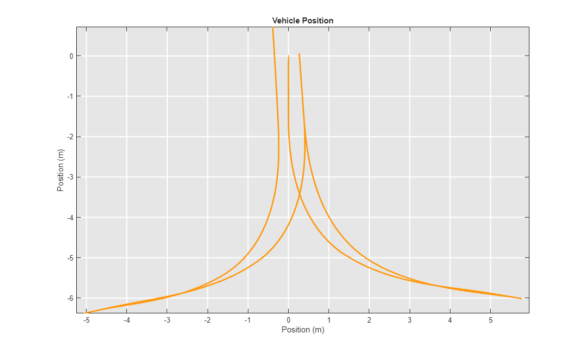 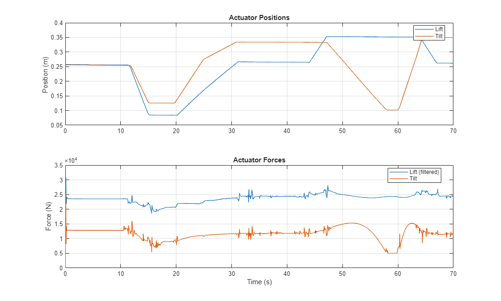 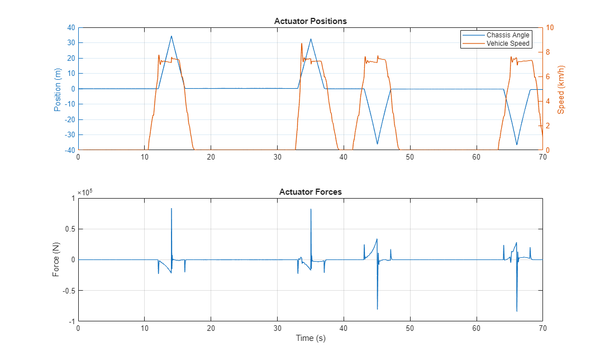